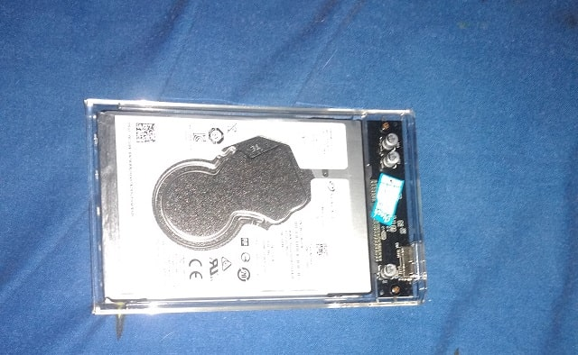

Nyesel Nyimpen Data di HDD External

Pagi ini dikejutkan dengan kejadian yang sangat tidak mengenakan.
menjalani hari-hari sebagai pengagguran yang dimana saat bangun tidur langsung menyalakan komputer dan duduk didepannya sambil memikirkan kehidupan kedepannya mau seperti apa...
tidak lama setelah komputer menyala memulai aktivitas dengan mendengarkan musik, dimulai dengan membuka folder musik agar lebih relax klik explore dan melihat partisi harddisk tidak terbaca, dalam pikiran "padahal semalem masih bisa ko malah ga kebaca gini"
saat itu juga saya merasa panik, mencoba berbagai cara dari cabut-colok, mengganti kabel, mengganti case dan lainnya tetap saja tidak bisa...
dalam pikiran "kayaknya udah gabisa diselametin ini hdd" dan parahnya lagi semua data penting ada disitu semua, karena partisi komputer tidak menyimpan data apapun, saat itu juga merasa frustasi dan mencoba bongkar hddnya
seperti kebanyakan orang, ketika membongkar barang pertama kali pastinya tidak akan bisa balik lagi ke-keadaan semula. (merasa sial disini haha)
benar saja hdd itu menjadi benar-benar rusak karena sudah saya bongkar cassing dalamnya sampai saya hancurin kepingan hddnya...
tamat sudah data-data penting didalamnya, padahal banyak file yang penting buat kedepannya malah ilang semua, dan saya menyesalinya karena mengabaikan kesehatan hdd yang sebenarnya selalu saya cek dan terakhir itu tinggal 10%
selain itu hdd ini sering juga jatuh dari tangan saya alias sering kebanting kelantai yang membuat hdd jadi cepat rusak ditandai dengan mengeluarkan bunyi berdecit.
setelah kejadian ini, saya melakukan recovery ke hdd yang sebelumnya pernah saya singgahi untuk data-data penting ini, hanya sebagian data yang bisa direcovery sisanya sudah tidak ada harapan lagi...
ini kejadian pertama kali hdd rusak dan ada data penting didalamnya, kedepannya kalo punya hdd external ga bakal deh dipake sesering mungkin
disimpan ditempat yang aman dan dikasih cassing kalo bisa, biar kalo jatoh ga bikin kerusakan yang fatal...
Kata-kata terakhir 'nyesel gua nyimpen data penting dihdd external yang udah mau rusak :3'